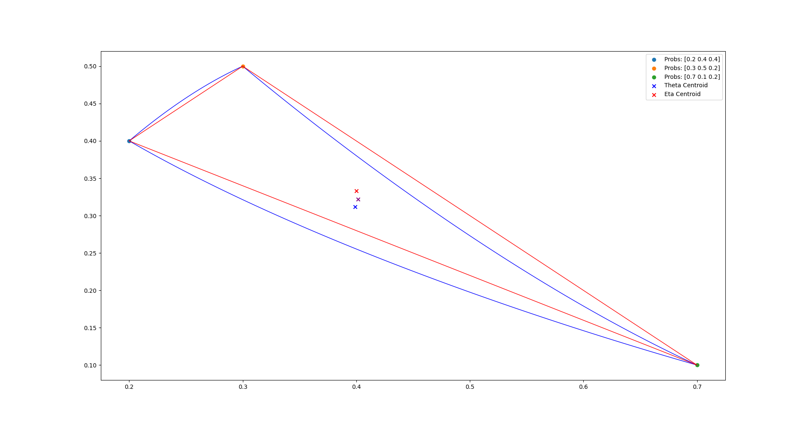
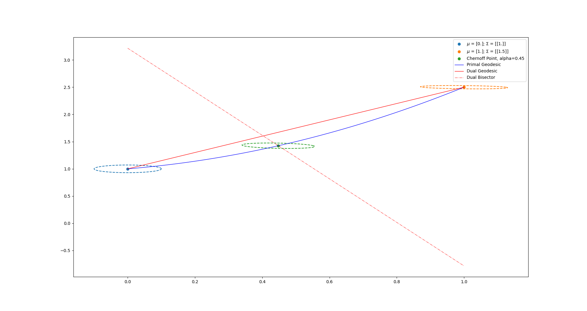
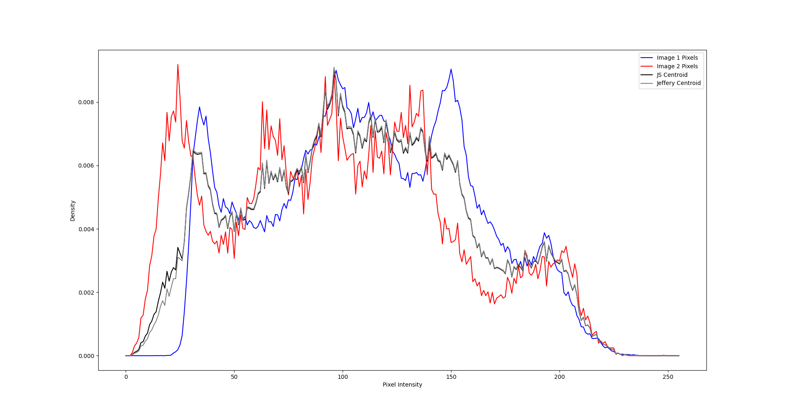
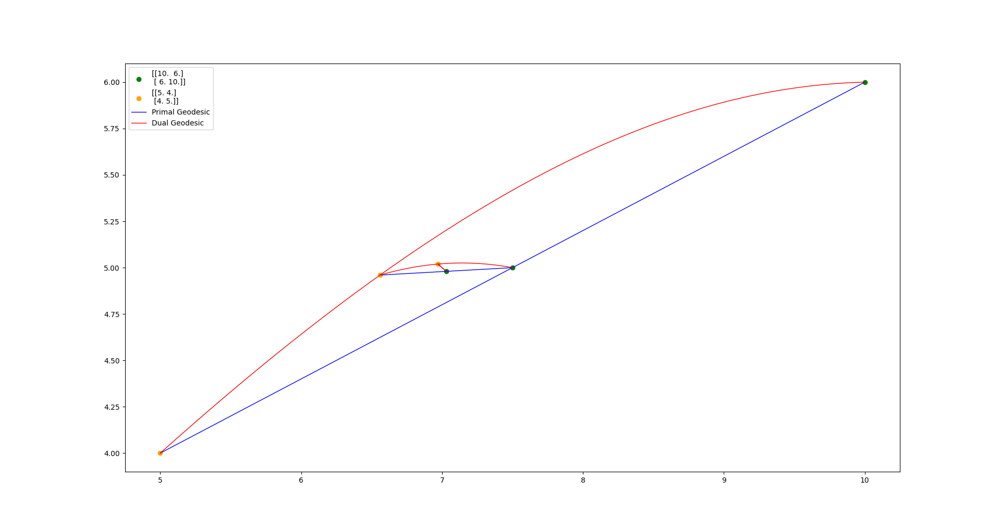

pyBregMan
A Python library for geometric computing on Bregman Manifolds with Applications
Contact:
Frank Nielsen
and
Alexander Soen
TBA Summer 2024!

Sided Bregman centroids and Jensen centroids

Chernoff point (Chernoff information)

Jensen-Shannon centroid of discrete distributions (histograms)

Inductive arithmetic-harmonic-mean
converging to the geometric matrix mean
Last updated, June 2024.